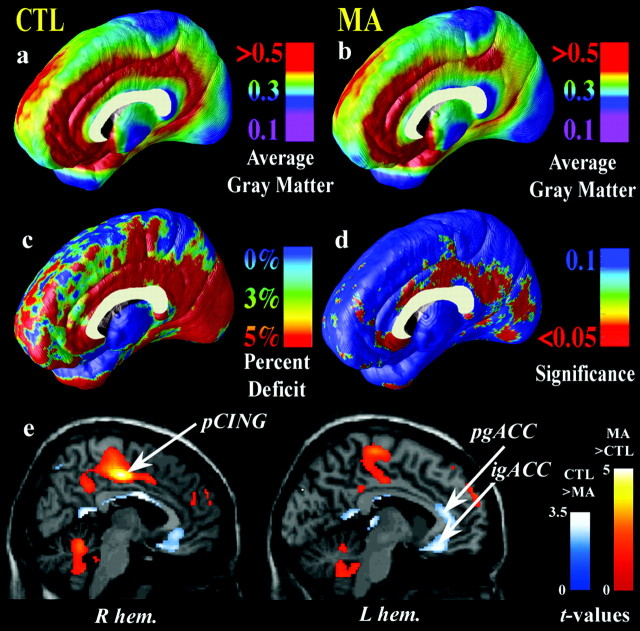

Research figure · methamphetamineBBC World Service · 10 May 2006
How methamphetamine affects the brain
A conversation with Max Pearson on The World Today about MRI maps of brain structure in people with a history of methamphetamine use, and their implications for memory and health.
View the figure · Related figure: Thompson et al., Journal of Neuroscience (2004).
Listen to the BBC interviewMP3
Download recording ↓